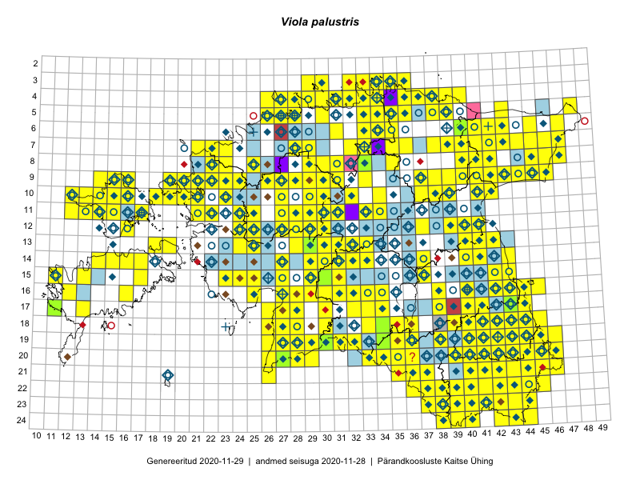

Viola palustris
Uuendatud: 2016-12-02
Kaardile koondatud taksonid: Viola palustris L.

Kaart põhineb 323 kirjel, neist vaatlusi 321 ja eksemplare 2. Taksonit on leitud 243 ruudust.
Kuvatud viited 20 esimesele andmebaasikirjele, ülejäänud PlutoFis
- Malle Leht: 2015-05-16: : ala
- Malle Leht: 2015-07-09: : ala
- Peedu Saar, Timo Luhamäe: 2015-05-10: 12-30: ala
- Peedu Saar: 2015-05-14: 09-43: ala
- Peedu Saar: 2015-05-14: 10-42: ala
- Peedu Saar, Liina Oja: 2015-05-22: 19-30: ala
- Peedu Saar, Liina Oja: 2015-05-22: 19-29: ala
- Thea Kull: 2015-07-07: 16-40: ala
- Peedu Saar, Liina Oja: 2015-05-20: 18-28: ala
- Peedu Saar, Liina Oja: 2015-05-20: 18-26: ala
- Peedu Saar, Toomas Kukk: 2015-05-28: 10-15: ala
- Toomas Kukk, Eerik Leibak: 2015-08-09: 14-15: ala
- Toomas Kukk, Peedu Saar: 2014-09-23: 07-42: ala
- Toomas Kukk, Peedu Saar: 2014-09-23: 06-42: ala
- Toomas Kukk, Peedu Saar: 2014-09-24: 06-41: ala
- Peedu Saar, Toomas Kukk: 2015-05-26: 10-16: ala
- Rein Kalamees, Kersti Püssa: 2015-09-06: 03-32: ala
- Rein Kalamees, Kersti Püssa: 2015-08-04: 03-33: ala
- Rein Kalamees, Kersti Püssa: 2015-09-02: 03-36: ala
- Toomas Kukk, Raivo Kalle: 2015-05-14: 10-41: ala